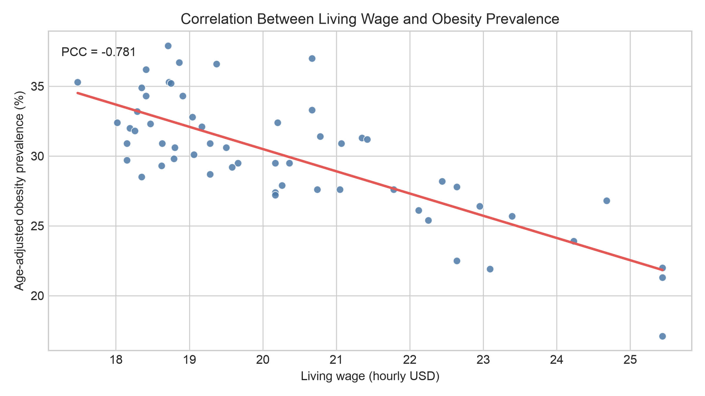

CDC Data Analysis
Living wages and obesity prevalence across California's 58 counties
We analyzed the relationship between obesity rates and the cost of healthy living across California counties.
Data Acquisition
We downloaded the PLACES CDC dataset (2025 release) for obesity rates in California counties.
We downloaded the Living Wage dataset from the State of California Government website for living wages by county (hourly USD).
We cleaned the PLACES dataset by
- dropping all missing values in the
OBESITY_AdjPrevcolumn, lowering the number of rows from 3143 to 2956 (~6% loss), and - dropping all non-CA rows (by
StateAbbr), lowering the number of rows to 58 (1.85% of the original size).
There were no missing values in the Living Wage dataset.
We then joined them by county, resulting in a final dataset with 58 rows and two features.
Results
We started exploratory data inspection and found:
| Statistic | Adjusted Obesity Prevalence | Hourly Wage (USD) |
|---|---|---|
| Mean | 29.981 | 20.325 |
| std | 4.277 | 2.098 |
| min | 17.100 | 17.480 |
| p25 | 27.600 | 18.713 |
| p50 | 30.350 | 19.620 |
| p75 | 32.400 | 21.403 |
| max | 37.900 | 25.440 |
Obesity Prevalence
For obesity:
- the top three most obese counties were Fresno, Riverside, and Madera,
- the top three least obese counties were San Francisco, Marin, and Santa Clara,
- the least-obese county (San Francisco) was 3.012 standard deviations away from the mean, exceeding the 1.96 limit (95% CI) and suggesting that this may have been an outlier, and
- inland counties had higher obesity prevalences than coastal counties (see map below).
Figure 1: Obesity Prevalence by County in California
Hourly Wages
For hourly wages:
- the top three counties with the highest hourly wages were San Mateo, San Francisco, and Marin,
- the top three counties with the lowest hourly wages were Tulare, Glenn, and Sutter, and
- coastal counties had significantly higher hourly wages than inland counties (see map below).
Figure 2: Living Wage by County in California
Correlation
We applied linear regression to the combined dataset and calculated a Pearson correlation coefficient of -0.781. This indicated a relatively strong negative correlation between obesity and hourly wages: counties with higher hourly wages tended to have lower obesity prevalence.

Figure 3: Scatterplot with Least Squares Regression Line (LSRL)
Takeaway
We found a strong negative relationship between living wages and age-adjusted obesity prevalence across California counties. Counties with higher living wages generally had lower obesity rates, while many inland counties had both lower living wages and higher obesity rates than coastal counties. The Pearson correlation coefficient of -0.781 summarized this pattern across all 58 counties.
This result showed an association, not proof that living wages directly caused differences in obesity. Other factors—including food access, health care, transportation, education, and local demographics—may also have contributed to the county-level pattern. Even with that limitation, our analysis highlighted a meaningful geographic and economic disparity that could guide further research into how local conditions shaped public health.